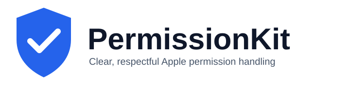

Predictable
One status model and structured request result across public Apple permission frameworks.

PermissionKit gives Apple-platform apps a strongly typed, async-first permission layer—with normalized states, diagnostics, observations, and testing support.
One status model and structured request result across public Apple permission frameworks.
No private APIs, telemetry, remote service, or fabricated permission grants.
Use mock providers and deterministic transitions without showing a native prompt.
import PermissionKit
let result = await Permission.camera.request()
if result.isGranted { /* Start camera work. */ }| Permission | Check | Request | Notes |
|---|---|---|---|
| Camera | Yes | Yes | AVFoundation where available |
| Microphone | Yes | Yes | AVFoundation where available |
| Photos | Yes | Yes | Read/write and add-only access |
| Contacts | Yes | Yes | Public Contacts API |
| Location | Yes | Yes | When-in-use and always flows |
| Notifications | Yes | Yes | Alert, badge, and sound options |
| Speech, tracking, media library | Yes | Yes | Availability varies by Apple platform |
PermissionKit does not bypass Apple permission systems. A denial is a valid user decision, and unsupported or unavailable capabilities are never represented as authorization. Diagnostics inspect configuration but never edit a host application’s privacy manifest or Info.plist.
let mock = MockPermissionCenter()
await mock.script(permission: .camera, initial: .notDetermined, afterRequest: .authorized)
XCTAssertTrue((await mock.request(.camera)).isGranted)